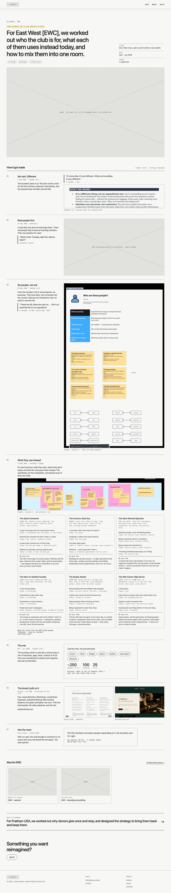
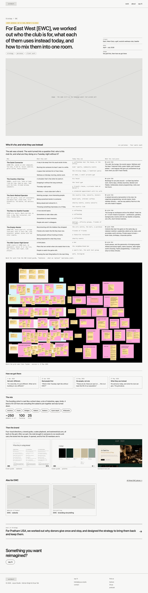
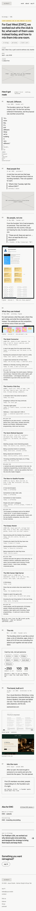
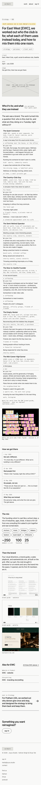

Study 42 · 26 October 2026 · Kahran
EWC, told two ways
A new piece, EWC · strategy: the brand job that became "who is this club for?" Built from the real material: transcripts, the FigJam board, the brand guide.
A · Rounds
Seven dated rounds, Study 04's pick. Open A

B · Strategy first
The value grid is the page; the story sits under it. Open B



Pick: for Divya. Quotes and the grid are sourced word for word; the lines between them are drafts for Kahran's pass.